You can open the table by selecting model elements in a model editor (such as the MoDisco model browser), right-clicking and choosing Edit in a table editor :
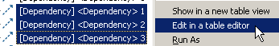
You can open the table by selecting model elements in a model editor (such as the MoDisco model browser), right-clicking and choosing Show in a new table view :
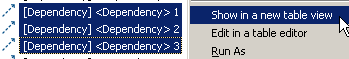
You can drag elements from any model editor and drop them on an open table to add them to this table.
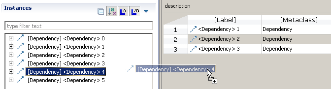
You can also drop a model element onto a reference to set a unary reference, or add the element to the list for a n-ary reference :
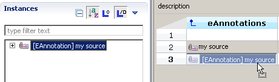
If the table was opened with a configuration that allows this (for example, you can create instances of Dependency in a "table of dependencies"), you can add a model element by clicking on the "plus" icon :
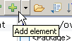
If the table configuration allows creating several types of elements, you can choose which one you want to create in the drop down menu:
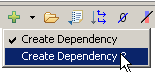
You can remove elements from the table by selecting them, right-clicking and choosing Remove Lines.
This only removes the elements from the view, not the model.
You can delete elements from the model by selecting the elements in the Label column, right-clicking and selecting Delete Elements from Model:
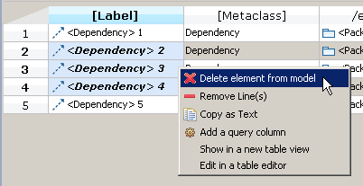
To edit an attribute or reference, double-click on its cell in the table, or select the cell and hit F2.
The cell should then go in edit mode (if the value is editable):
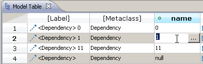
To commit the value, hit Enter. To cancel the edit, hit Escape.
You can edit all the standard Ecore data types: EString, EChar, EFloat, EFloatObject, ECharacterObject, EBoolean, EBooleanObject, EDouble, EDoubleObject, EInt, EIntegerObject, ELong, ELongObject, EBigInteger, EBigDecimal, EByte, EByteObject, EShort, EShortObject.
If the value you entered is not valid for this type, the contents become highlighted in red, and you can't commit the value:
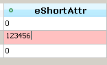
When you enter edit mode for a n-ary attribute (one which accepts a list of values instead of just a single value), a dialog opens to let you edit the values:
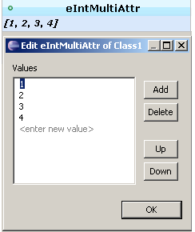
You can add, remove, and move elements in the list by using the buttons.
For unary references, you can select a value in several ways:
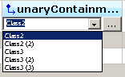
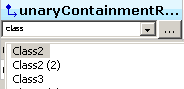
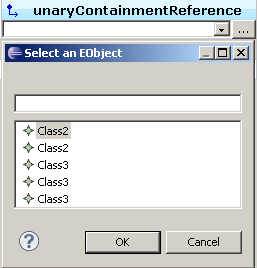
For composite references, you will be asked for confirmation because changing a composite reference means deleting the previous value (if any) from the model, and moving the new value from its previous parent.
When you edit a n-ary reference, this dialog opens:
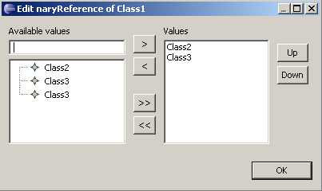
You can undo/redo modifications done on the model by using the undo/redo actions in the editor in which the model is opened.
Select cells and use the copy action (either through the context menu or the Edit menu) to copy the contents of the cells as text to the clipboard. You can then paste it in any program, such as Text or SpreadSheet editor.
There is 2 way to sort the columns :
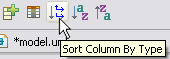
Click on the Load Customizations button, and in the dialog that opens, move the customizations you want to use to the right column:
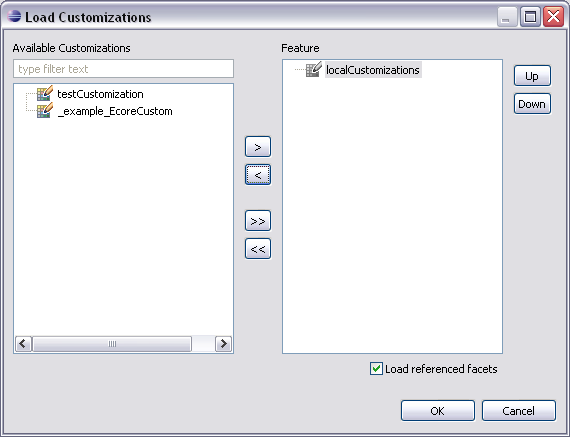
The table use a local customization file to store the columns visibility. This file cannot be unloaded by the user, but it is visible in the dialog in grayed mode.
See the documentation for the MoDisco browser customizations.
The features that are customizable for the table are:
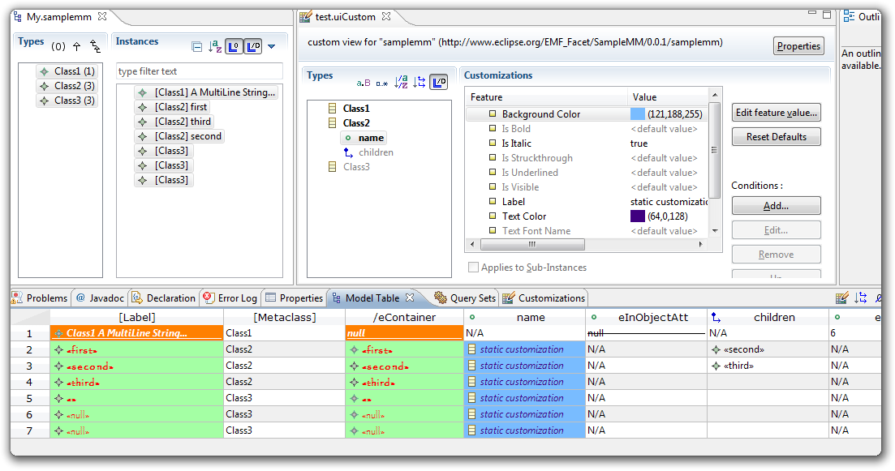
It is possible to serialize your tables in order to keep your preferences saved. To do so, you can use the usual "File" menu to prompt the "Save As" window, or the key binding "CTRL + s". If the table has not already been serialized, the "Save As" window will pop up too.

The .table file is a xmi one, which contains :
To open a saved table in order to edit it, you need to use the editor.You can use the contextual menu and choose "Model table" as a viewer, or simply double click on the .table file.
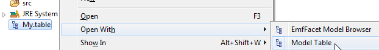
If you want to use the Table View to only visualize your saved table, you need to open an empty view :
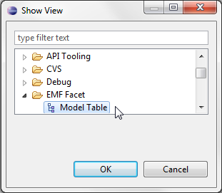
And open your file with the "Open saved table" button :
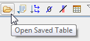
It is possible to add a column representing the result of a query on every table's elements. The "Add query column" menu is accessible in the table contextual menu :
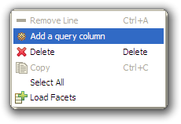 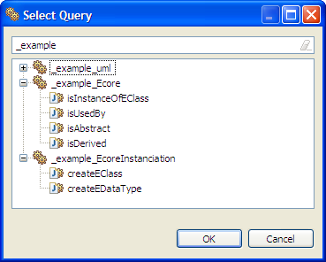
A new column is added for each query, and the result is updated if the model changes. 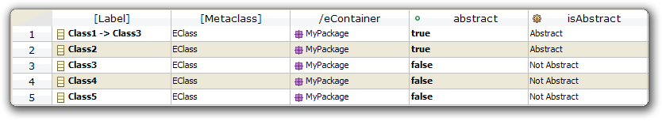
Once a query Column has been added to the table, you can easily delete it using the usual contextual menu, and pressing "delete". 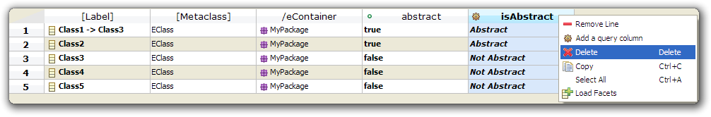
It is possible to add some EMF Facets to the table. A first menu button is placed in the main toolbar, another one in the contextual menu.
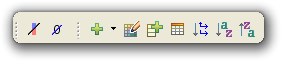 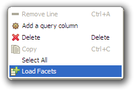
If the applied facets contained FacetAttribute or FacetReference, some new columns will be added to the table to represent their results.
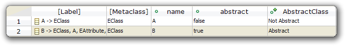
You can also provide the facet with a "SetQuery", which will enable you to edit the content of the facet. In this example, we can edit the content of the facet "Is Abstract" the same way we could edit any other cell:
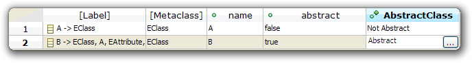
Facets applied on a table will automatically be applied again when the .table file is opened.
The EMF Facet table comes with a SelectionDialog to choose whether to show/hide columns. To do so, just open the selection dialog with the menu button in the main toolbar :
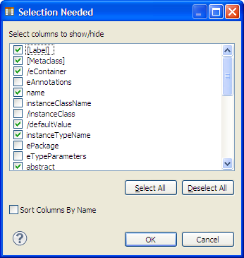
Then choose which columns you want to show/hide. You can also sort the column's name by alphabetical order. Storage of the hidden columns is done using local customization file. We recommend to set the local file at the top of the customization stack. The following dialog can appear when the local file is not the first :
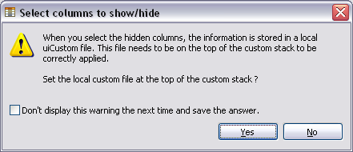
The action Select Columns To Show/Hide can display a warning message with a question. This dialog provides a CheckBox in order not to be displayed each time. The NatTable Editor Preference Page allows to reset the display of the message and to change your answer.
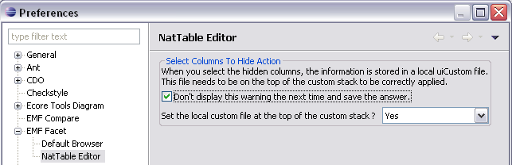
Copyright (c) 2010, 2011 CEA LIST.
All rights reserved. This program and the accompanying materials are made available under the terms of the Eclipse Public License v1.0 which accompanies this distribution, and is available at http://www.eclipse.org/legal/epl-v10.html
Contributors: Nicolas Bros (Mia-Software) Nicolas Guyomar (Mia-Software) Vincent Lorenzo (CEA-LIST)